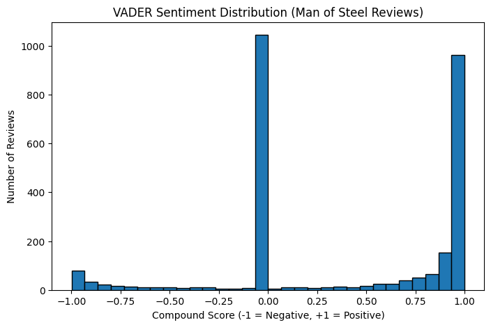
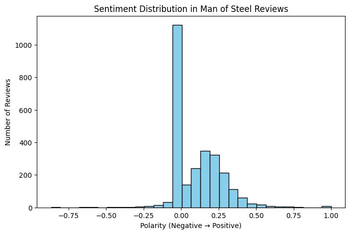
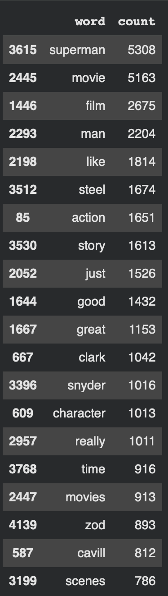
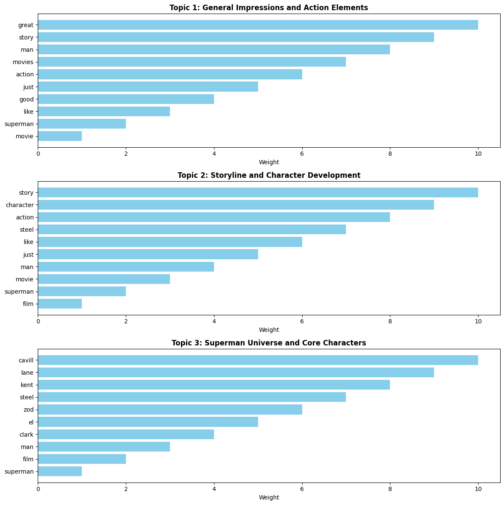
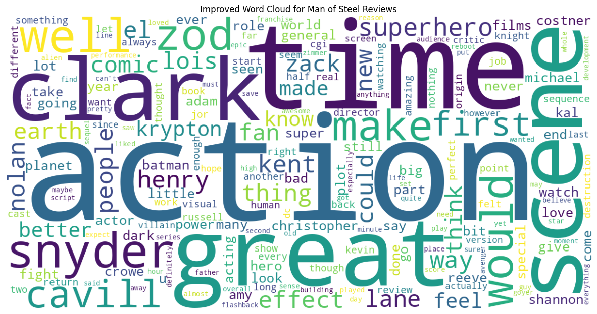

Analysis Overview
At first, I thought most viewers would just enjoy Man of Steel. The TextBlob sentiment showed most reviews were neutral or slightly positive, but VADER revealed sharper spikes in both positive and negative reactions. The largest spike at 0.00 shows many neutral reviews, while the big spike at 1.00 shows enthusiastic fans. Negative reactions were smaller but intense, revealing that the movie divides audiences.
Sentiment Analysis
VADER gave a better sense of how emotionally charged the reviews were. Fans who loved the movie expressed very high positive sentiment while critics used strong negative language. This shows that audiences care about tone, character interpretation, and expectations of Superman.
TextBlob showed mostly neutral reviews with a small peak at slight positivity. This triangle-like pattern reflects that most commentary was descriptive rather than strongly emotional.
Term Frequency
Looking at the most frequent words, the focus is on pacing, action, and Superman themes. Big words like “action,” “story,” and “superman” dominate, while smaller words like “feel,” “love,” and “Krypton” highlight emotional and worldbuilding aspects.
Topic Modeling
LDA topic modeling revealed three main clusters: action and general impressions, story and character development, and the Superman universe including core characters. This shows that audiences talk about both plot and character, separating ideas naturally through word patterns.
Word Cloud
The word cloud confirms the focus on tone, action, pacing, and Superman’s character. Prominent names like Clark, Snyder, and Cavill show that audiences respond to both the story and the creators. Smaller words hint at emotional engagement and worldbuilding.
Key Takeaways
My initial assumption that most people would just enjoy the movie was too simple. The data shows that reactions are polarized, with fans expressing enthusiasm and critics expressing strong dislike. Audiences respond to more than the plot — they care about how Superman is portrayed, his moral complexity, and the emotional weight of the story. Overall, Man of Steel sparks strong feelings in different ways, highlighting both spectacle and deeper meaning.